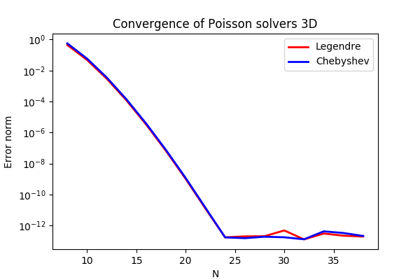

Summary. This is a demonstration of how the Python module shenfun can be used to solve a 3D Poisson equation in a 3D tensor product domain that has homogeneous Dirichlet boundary conditions in one direction and periodicity in the remaining two. The solver described runs with MPI without any further considerations required from the user. Spectral convergence, as shown in Figure 1, is demonstrated. The demo is implemented in a single Python file dirichlet_poisson3D.py, and the numerical method is is described in more detail by J. Shen [1] and [2].
Figure 1: Convergence of 3D Poisson solvers for both Legendre and Chebyshev modified basis function.

Model problem
Poisson equation
Method of manufactured solutions
Implementation
Preamble
Manufactured solution
Discretization and MPI
Variational formulation
Solve linear equations
Convergence test
Complete solver
Bibliography
The Poisson equation is given as $$ \begin{align} \nabla^2 u(\bs{x}) &= f(\bs{x}) \quad \text{for }\, \bs{x}=(x, y, z) \in \Omega, \tag{1}\\ u(\pm 1 ,y, z) &=0, \tag{2}\\ u(x, 2\pi, z) &= u(x, 0, z), \tag{3}\\ u(x, y, 2\pi) &= u(x, y, 0), \tag{4} \end{align} $$ where \( u(\bs{x}) \) is the solution and \( f(\bs{x}) \) is a function. The domain \( \Omega = [-1, 1]\times [0, 2\pi]^2 \).
To solve Eq. (1) with the Galerkin method we need smooth basis functions, \( v(\bs{x}) \), that live in the Hilbert space \( H^1(\Omega) \) and that satisfy the given boundary conditions. To this end we will use one basis function for the \( x \)-direction, \( \mathcal{X}(x) \), one for the \( y \)-direction, \( \mathcal{Y}(y) \), and one for the \( z \)-direction, \( \mathcal{Z}(z) \). And then we create three-dimensional basis functions like $$ v(x, y, z) = \mathcal{X}(x) \mathcal{Y}(y) \mathcal{Z} (z). $$
The basis functions \( \mathcal{Y}(y) \) and \( \mathcal{Z}(z) \) are chosen as Fourier exponentials, since these functions are periodic. Likewise, the basis functions \( \mathcal{X}(x) \) are chosen as modified Legendre or Chebyshev polynomials, using \( \phi_l(x) \) to refer to either one $$ \begin{align} \mathcal{X}_l(x) &= \phi_l(x) - \phi_{l+2}(x), &\forall \, l \in \bs{l}^{N_0}, \tag{5}\\ \mathcal{Y}_m(y) &= e^{\imath m y}, &\forall \, m \in \bs{m}^{N_1}, \tag{6}\\ \mathcal{Z}_n(z) &= e^{\imath n z}, &\forall \, n \in \bs{n}^{N_2}, \tag{7} \end{align} $$ where the size of the discretized problem is \( \bs{N} = (N_0, N_1, N_2) \), \( \bs{l}^{N_0} = (0, 1, \ldots, N_0-3) \), \( \bs{m}^{N_1} = (-N_1/2, -N_1/2+1, \ldots, N_1/2-1) \) and \( \bs{n}^{N_2} = (-N_2/2, -N_2/2+1, \ldots, N_2/2-1) \). However, due to Hermitian symmetry, we only store \( N_2/2+1 \) wavenumbers in the \( z \)-direction, such that \( \bs{n}^{N_2} = (0, 1, \ldots, N_2/2) \). We refer to the Cartesian wavenumber mesh on vector form as \( \bs{k} \): $$ \bs{k} = \{(l, m, n) \in \bs{l}^{N_0} \times \bs{m}^{N_1} \times \bs{n}^{N_2}\}. $$
We have the bases $$ \begin{align} V^{N_0} &= \text{span}\{ \mathcal{X}_l \}_{l\in\bs{l}^{N_0}}, \tag{8}\\ V^{N_1} &= \text{span}\{ \mathcal{Y}_m \}_{m\in\bs{m}^{N_1}}, \tag{9}\\ V^{N_2} &= \text{span}\{ \mathcal{Z}_n \}_{n\in\bs{n}^{N_2}}, \tag{10} \end{align} $$ and from these we create a tensor product space \( W^{\bs{N}}(\bs{x}) \) from Cartesian products of the three bases $$ \begin{equation} W^{\bs{N}}(\bs{x}) = V^{N_0}(x) \times V^{N_1}(y) \times V^{N_2}(z). \tag{11} \end{equation} $$
And then we look for discrete solutions \( u \in W^{\bs{N}} \) like $$ \begin{align} u(\bs{x}) &= \sum_{l\in \bs{l}^{N_0}} \sum_{m\in \bs{m}^{N_1}}\sum_{n\in \bs{n}^{N_2}}\hat{u}_{l,m,n} \mathcal{X}_l(x) \mathcal{Y}_m(y) \mathcal{Z}_n(z), \tag{12} \\ &= \sum_{\ts{k} \in \bs{k}}\hat{u}_{\ts{k}} v_{\ts{k}}(\bs{x}), \tag{13} \end{align} $$
where \( \hat{u}_{l,m,n} \) are components of the expansion coefficients for \( u \) and the second form, \( \{\hat{u}_{\ts{k}}\}_{\ts{k}\in\bs{k}} \), is a shorter, simplified notation, with sans-serif \( \ts{k}=(l, m, n) \). The expansion coefficients are the unknowns in the spectral Galerkin method.
We now formulate a variational problem using the Galerkin method: Find \( u \in W^{\bs{N}} \) such that $$ \begin{equation} \int_{\Omega} \nabla^2 u \, \overline{v} \, w\, \bs{dx} = \int_{\Omega} f \, \overline{v}\, w\, \bs{dx} \quad \forall v \, \in \, W^{\bs{N}}. \tag{14} \end{equation} $$ Here \( \bs{dx}=dxdydz \), and the overline represents a complex conjugate, which is needed here because the Fourier exponentials are complex functions. The weighted integrals, weighted by \( w(\bs{x}) \), are called inner products, and a common notation is $$ \begin{equation} \int_{\Omega} u \, \overline{v} \, w\, \bs{dx} = \langle u, v\rangle _w. \tag{15} \end{equation} $$ The integral can either be computed exactly, or with quadrature. The advantage of the latter is that it is generally faster, and that non-linear terms may be computed just as quickly as linear. For a linear problem, it does not make much of a difference, if any at all. Approximating the integral with quadrature, we obtain $$ \begin{align} \int_{\Omega} u \, \overline{v} \, w\, \bs{dx} &\approx \langle u, v \rangle_w^{\bs{N}}, \tag{16}\\ &\approx \sum_{i=0}^{N_0-1} \sum_{j=0}^{N_1-1}\sum_{k=0}^{N_2-1} u(x_i, y_j, z_k) \overline{v}(x_i, y_j, z_k) w(x_i, y_j, z_k), \tag{17} \end{align} $$ where \( w(\bs{x}) \) now are the quadrature weights. The quadrature points \( \{x_i\}_{i=0}^{N_0-1} \) are specific to the chosen basis, and even within basis there are two different choices based on which quadrature rule is selected, either Gauss or Gauss-Lobatto. The quadrature points for the Fourier bases are the uniform \( \{y_j\}_{j=0}^{N_1-1}=2\pi j / N_1 \) and \( \{z_k\}_{k=0}^{N_2-1} = 2 \pi k/N_2 \).
Inserting for test function (12) and trialfunction \( v_{p,q,r} = \mathcal{X}_{p} \mathcal{Y}_q \mathcal{Z}_r \) on the left hand side of (14), we get $$ \begin{align*} \langle \nabla^2u, v \rangle_w^{\bs{N}} &= \left\langle \nabla^2\sum_{l\in \bs{l}^{N_0}} \sum_{m\in \bs{m}^{N_1}}\sum_{n\in \bs{n}^{N_2}}\hat{u}_{l, m, n} \mathcal{X}_{l} \mathcal{Y}_m \mathcal{Z}_n, \mathcal{X}_{p} \mathcal{Y}_q \mathcal{Z}_r \right\rangle_w^{\bs{N}}, \\ &= \left[\left(\mathcal{X}_l^{''}, \mathcal{X}_p \right)_w^N - (m^2+n^2)\left(\mathcal{X}_l, \mathcal{X}_p \right)_w^N \right]\delta_{mq} \delta_{nr} (2\pi)^2\hat{u}_{l,m,n}, \\ &= (2\pi)^2 \left( A_{pl} - (m^2 + n^2)B_{pl}\right) \hat{u}_{l,q,r}, \end{align*} $$ where the notation \( (\cdot, \cdot)_w^{N_0} \) $$ \begin{equation} B_{pl} = \left( \mathcal{X}_l, \mathcal{X}_p \right)_w^{N_0} = \sum_{i=0}^{N_0-1} \mathcal{X}_l(x_i) \mathcal{X}_p(x_i) w(x_i), \tag{18} \end{equation} $$ is used to represent an \( l_2 \) inner product along only the first, nonperiodic, direction. The factor \( (2\pi)^2 \) above comes from integrating over the two periodic directions, since $$ \begin{align} \int_0^{2\pi} \mathcal{Y}_m(y) \overline{\mathcal{Y}}_q(y) dy = 2\pi \delta_{mq}, \tag{19}\\ \int_0^{2\pi} \mathcal{Z}_n(y) \overline{\mathcal{Z}}_r(z) dz = 2\pi \delta_{nr}, \tag{20} \end{align} $$ where \( \delta_{ij} \) is the Kronecker delta-function, which is one for \( i=j \) and zero otherwise.
The right hand side of Eq. (14) is computed as $$ \begin{equation} \tilde{f}_{p,q,r} = \left\langle f, \mathcal{X}_{p} \mathcal{Y}_q \mathcal{Z}_r \right \rangle_w^{\bs{N}}, \tag{21} \end{equation} $$ where a tilde is used because this is not a complete transform of the function \( f \), but only an inner product.
The linear system of equations to solve for the expansion coefficients can now be found as follows $$ \begin{equation} \left(A_{lj} - (m^2+n^2)B_{lj}\right) \hat{u}_{j,m,n} = \frac{1}{(2\pi)^2} \tilde{f}_{l,m,n}\quad \forall \, (l,m,n) \in \bs{k}. \tag{22} \end{equation} $$
Now, when \( \hat{u}_{\ts{k}} \) is found by solving this linear system over the
entire computational mesh, it may be
transformed to real space \( u(\bs{x}) \) using (12). Note that the matrices
\( A \in \mathbb{R}^{N_0-2, N_0-2} \) and \( B \in \mathbb{R}^{N_0-2, N_0-2} \) differs for Legendre or Chebyshev bases, but
for either case they have a
special structure that allows for a solution to be found very efficiently
in the order of \( \mathcal{O}(N_0-2) \) operations given \( m \) and \( n \), see
[1] and [2]. Fast solvers for (22) are implemented in shenfun for both bases.
In this demo we will use the method of manufactured
solutions to demonstrate spectral accuracy of the shenfun bases. To
this end we choose a smooth analytical function that satisfies the given boundary
conditions:
$$
\begin{equation}
u_e(x, y, z) = \left(\cos(4x) + \sin(2y) + \sin(4z)\right)(1-x^2). \tag{23}
\end{equation}
$$
Sending \( u_e \) through the Laplace operator, we obtain the right hand side
$$
\begin{equation}
\nabla^2 u_e(x,y,z) = -16(1 - x^2) \cos(4 x) + 16 x \sin(4 x) - 2 \cos(4 x)
- (1-x^2)(4 \sin(2y) + 16\sin(4z)). \tag{24}
\end{equation}
$$
Now, setting \( f_e(\bs{x}) = \nabla^2 u_e(\bs{x}) \) and solving for \( \nabla^2 u(\bs{x}) = f_e(\bs{x}) \), we can compare the numerical solution \( u(\bs{x}) \) with the analytical solution \( u_e(\bs{x}) \) and compute error norms.
We will solve the Poisson problem using the shenfun Python module. The first thing needed is then to import some of this module's functionality plus some other helper modules, like Numpy and Sympy:
from sympy import symbols, cos, sin, exp, lambdify
import numpy as np
from shenfun.fourier.bases import R2CBasis, C2CBasis
from shenfun.tensorproductspace import TensorProductSpace
from shenfun import inner, div, grad, TestFunction, TrialFunction, Function, \
project, Dx
from mpi4py import MPI
We use sympy for the manufactured solution and numpy for testing. MPI for
Python (mpi4py) is required for running the solver with MPI.
The exact solution \( u_e(x, y, z) \) and the right hand side \( f_e(x, y, z) \) are created using sympy as follows
x, y, z = symbols("x,y,z")
ue = (cos(4*x) + sin(2*y) + sin(4*z))*(1-x**2)
fe = ue.diff(x, 2) + ue.diff(y, 2) + ue.diff(z, 2)
# Lambdify for faster evaluation
ul = lambdify((x, y, z), ue, 'numpy')
fl = lambdify((x, y, z), fe, 'numpy')
These solutions are now valid for a continuous domain. The next step is thus to discretize, using the computational mesh $$ (x_i, y_j, z_k)\, \forall \, (i, j, k) \in [0, 1,\ldots, N_0-1] \times [0, 1, \ldots, N_1-1] \times [0, 1, \ldots, N_2-1] $$ and a finite number of basis functions.
Note that it is not mandatory to use sympy for the manufactured solution. Since the
solution is known (24), we could just as well simply use Numpy
to compute \( f_e \). However, with Sympy it is much
easier to experiment and quickly change the solution.
We create three bases with given size, one for each dimension of the problem. From these three bases a TensorProductSpace is created.
# Size of discretization
N = [14, 15, 16]
SD = chebyshev.bases.ShenDirichletBasis(N[0])
#SD = legendre.bases.ShenDirichletBasis(N[0])
K1 = C2CBasis(N[1])
K2 = R2CBasis(N[2])
T = TensorProductSpace(comm, (SD, K1, K2), axes=(0, 1, 2))
X = T.local_mesh()
Note that we can either choose a Legendre or a Chebyshev basis for the
nonperiodic direction. The
TensorProductSpace class takes an MPI communicator as first argument and the
computational mesh is distributed internally using the pencil method. The
T.local_mesh method returns the mesh local to each processor. The axes
keyword determines the order of transforms going back and forth between real and
spectral space. With axes=(0, 1, 2) and a forward transform (from real space
to spectral, i.e., from \( u \) to \( \hat{u} \)) axis 2 is transformed first and then 1
and 0, respectively.
The manufactured solution is created with Dirichlet boundary conditions in the
\( x \)-direction, and for this reason SD is the first basis in T. We could just
as well have put the nonperiodic direction along either \( y \)- or \( z \)-direction,
though, but this would then require that the order of the transformed axes be
changed as well. For example, putting the Dirichlet direction along \( y \), we
would need to create the tensorproductspace as
T = TensorProductSpace(comm, (K1, SD, K2), axes=(1, 0, 2))
such that the Dirichlet direction is the last to be transformed. The reason for
this is that only the Dirichlet direction leads to matrices that need to be
inverted (or solved). And for this we need the entire data array along the Dirichlet
direction to be local to the processor. If the SD basis is the last to be
transformed, then the data will be aligned in this direction, whereas the other
two directions may both, or just one of them, be distributed.
Note that X is a list containing local values of the arrays \( \{x_i\}_{i=0}^{N_0-1} \),
\( \{y_j\}_{j=0}^{N_1-0} \) and \( \{z_k\}_{k=0}^{N_2-1} \). For example, using 4
procesors and a processor mesh of shape \( 2\times 2 \), then the local slices for
each processor in spectral space are
>>> print(comm.Get_rank(), T.local_slice())
3 [slice(0, 14, None), slice(8, 15, None), slice(5, 9, None)]
1 [slice(0, 14, None), slice(0, 8, None), slice(5, 9, None)]
2 [slice(0, 14, None), slice(8, 15, None), slice(0, 5, None)]
0 [slice(0, 14, None), slice(0, 8, None), slice(0, 5, None)]
where the global shape is \( \bs{N}=(14, 15, 9) \) after taking advantage of Hermitian symmetry in the \( z \)-direction. So, all processors have the complete first dimension available locally, as they should. Furthermore, processor three owns the slices from \( 8:15 \) and \( 5:9 \) along axes \( y \) and \( z \), respectively. Processor 2 owns slices \( 0:8 \) and \( 0:5 \) etc. In real space the mesh is distributed differently. First of all the global mesh shape is \( \bs{N}=(14, 15, 16) \), and it is distributed along the first two dimensions. The local slices can be inspected as
>>> print(comm.Get_rank(), T.local_slice(False))
0 [slice(0, 7, None), slice(0, 8, None), slice(0, 16, None)]
1 [slice(0, 7, None), slice(8, 15, None), slice(0, 16, None)]
2 [slice(7, 14, None), slice(0, 8, None), slice(0, 16, None)]
3 [slice(7, 14, None), slice(8, 15, None), slice(0, 16, None)]
Since two directions are distributed, both in spectral and real space, we say that we have a two-dimensional decomposition (here a \( 2\times 2 \) shaped processor mesh) and the MPI distribution is of type pencil. It is also possible to choose a slab decomposition, where only one dimension of the array is distributed. This choice needs to be made when creating the tensorproductspace as
T = TensorProductSpace(comm, (SD, K1, K2), axes=(0, 1, 2), slab=True)
which will lead to a mesh that is distributed along \( x \)-direction in real space and \( y \)-direction in spectral space. The local slices are
>>> print(comm.Get_rank(), T.local_slice()) # spectral space
1 [slice(0, 14, None), slice(4, 8, None), slice(0, 9, None)]
2 [slice(0, 14, None), slice(8, 12, None), slice(0, 9, None)]
0 [slice(0, 14, None), slice(0, 4, None), slice(0, 9, None)]
3 [slice(0, 14, None), slice(12, 15, None), slice(0, 9, None)]
>>> print(comm.Get_rank(), T.local_slice(False)) # real space
3 [slice(11, 14, None), slice(0, 15, None), slice(0, 16, None)]
0 [slice(0, 4, None), slice(0, 15, None), slice(0, 16, None)]
2 [slice(8, 11, None), slice(0, 15, None), slice(0, 16, None)]
1 [slice(4, 8, None), slice(0, 15, None), slice(0, 16, None)]
Note that the slab decomposition is usually the fastest choice. However, the maximum number of processors with slab is \( \min \{N_0, N_1\} \), whereas a pencil approach can be used with up to \( \min \{N_1(N_2/2+1), N_0 N_1\} \) processors.
The variational problem (14) can be assembled using shenfun's
form language, which is perhaps surprisingly similar to FEniCS.
u = TrialFunction(T)
v = TestFunction(T)
K = T.local_wavenumbers()
# Get f on quad points
fj = fl(*X)
# Compute right hand side of Poisson equation
f_hat = inner(v, fj)
# Get left hand side of Poisson equation
matrices = inner(v, div(grad(u)))
The Laplacian operator is recognized as div(grad). The matrices object is a
dictionary representing the left hand side of (22), and there are two
keys: (ADDmat, BDDmat). The value of matrices["ADDmat"] is an object of
type SpectralMatrix,
which is shenfun's type for a matrix. This matrix represents \( A_{lj} \), see
(22), and it has an attribute scale that is
equal to \( (2\pi)^2 \) (also see (22)). The other key in matrices
is BDDmat, and the value here is a SpectralMatrix representing \( B_{lj} \) from
(22). This matrix has an attribute scale that is equal to \( m^2+n^2 \).
This scale is stored as a numpy array of shape \( (1, 15, 9) \), representing the
set
\( \{m^2+n^2: (m, n) \in \bs{m}^{N_1} \times \bs{n}^{N_2}\} \). Note that \( \bs{n}^{N_2} \) is stored
simply as an array of length \( N_2/2+1 \) (here 9), since the transform in direction \( z \)
takes a real signal and transforms it taking advantage of Hermitian symmetry,
see rfft.
Finally, solve linear equation system and transform solution from spectral \( \hat{u}_{\ts{k}} \) vector to the real space \( u(\bs{x}) \) and then check how the solution corresponds with the exact solution \( u_e \).
# Create Helmholtz linear algebra solver
H = Solver(**matrices)
# Solve and transform to real space
u_hat = Function(T) # Solution spectral space
u_hat = H(u_hat, f_hat) # Solve
uq = T.backward(u_hat)
# Compare with analytical solution
uj = ul(*X)
error = comm.reduce(np.linalg.norm(uj-uq)**2)
if comm.Get_rank() == 0:
print("Error=%2.16e" %(np.sqrt(error)))
A complete solver is given in Sec. Complete solver. This solver is created such that it takes in two commandline arguments and prints out the \( l_2 \)-errornorm of the solution in the end. We can use this to write a short script that performs a convergence test. The solver is run like
>>> python dirichlet_poisson3D.py 32 legendre
Error=6.5955040031498912e-10
for a discretization of size \( \bs{N}= N^3 = 32^3 \) and for the Legendre basis. Alternatively, change legendre to chebyshev for the Chebyshev basis.
We set up the solver to run for a list of \( N=[8, 10, \ldots, 38] \), and collect the errornorms in arrays to be plotted. Such a script can be easily created with the subprocess module
import subprocess
from numpy import log, array
from matplotlib import pyplot as plt
N = range(8, 40, 2)
error = {}
for basis in ('legendre', 'chebyshev'):
error[basis] = []
for i in range(len(N)):
output = subprocess.check_output("python dirichlet_poisson3D.py {} {}".format(N[i], basis), shell=True)
exec(output) # Error is printed as "Error=%2.16e"%(np.linalg.norm(uj-ua))
error[basis].append(Error)
if i == 0:
print("Error hmin r ")
print("%2.8e %2.8e %2.8f"%(error[basis][-1], 1./N[i], 0))
if i > 0:
print("%2.8e %2.8e %2.8f"%(error[basis][-1], 1./N[i], log(error[basis][-1]/error[basis][-2])/log(N[i-1]/N[i])))
The error can be plotted using matplotlib, and the generated figure is shown in the summary's Fig. 1. The spectral convergence is evident and we can see that after \( N=25 \) roundoff errors dominate as the errornorm trails off around \( 10^{-13} \).
plt.figure(figsize=(6, 4))
for basis, col in zip(('legendre', 'chebyshev'), ('r', 'b')):
plt.semilogy(N, error[basis], col, linewidth=2)
plt.title('Convergence of Poisson solvers 3D')
plt.xlabel('N')
plt.ylabel('Error norm')
plt.legend(('Legendre', 'Chebyshev'))
plt.savefig('poisson3D_errornorm.png')
plt.show()
>>> python dirichlet_poisson3D.py legendre
or similarly with chebyshev instead of legendre.
import sys
import importlib
from sympy import symbols, cos, sin, exp, lambdify
import numpy as np
from shenfun.fourier.bases import R2CBasis, C2CBasis
from shenfun.tensorproductspace import TensorProductSpace
from shenfun import inner, div, grad, TestFunction, TrialFunction, Function, \
project, Dx
import time
from mpi4py import MPI
comm = MPI.COMM_WORLD
# Collect basis and solver from either Chebyshev or Legendre submodules
basis = sys.argv[-1] if len(sys.argv) == 2 else 'chebyshev'
shen = importlib.import_module('.'.join(('shenfun', basis)))
Basis = shen.bases.ShenDirichletBasis
Solver = shen.la.Helmholtz
# Use sympy to compute a rhs, given an analytical solution
x, y, z = symbols("x,y,z")
ue = (cos(4*x) + sin(2*y) + sin(4*z))*(1-y**2)
fe = ue.diff(x, 2) + ue.diff(y, 2) + ue.diff(z, 2)
# Lambdify for faster evaluation
ul = lambdify((x, y, z), ue, 'numpy')
fl = lambdify((x, y, z), fe, 'numpy')
# Size of discretization
N = [eval(sys.argv[-2])]*3
SD = Basis(N[0])
K1 = C2CBasis(N[1])
K2 = R2CBasis(N[2])
T = TensorProductSpace(comm, (SD, K1, K2), axes=(0, 1, 2))
X = T.local_mesh(True)
u = TrialFunction(T)
v = TestFunction(T)
K = T.local_wavenumbers()
# Get f on quad points
fj = fl(*X)
# Compute right hand side of Poisson equation
f_hat = inner(v, fj)
if basis == 'legendre':
f_hat *= -1.
# Get left hand side of Poisson equation
if basis == 'chebyshev':
matrices = inner(v, div(grad(u)))
else:
matrices = inner(grad(v), grad(u))
# Create Helmholtz linear algebra solver
H = Solver(**matrices)
# Solve and transform to real space
u_hat = Function(T) # Solution spectral space
t0 = time.time()
u_hat = H(u_hat, f_hat) # Solve
uq = T.backward(u_hat, fast_transform=False)
# Compare with analytical solution
uj = ul(*X)
print("Error=%2.16e" %(np.linalg.norm(uj-uq)))